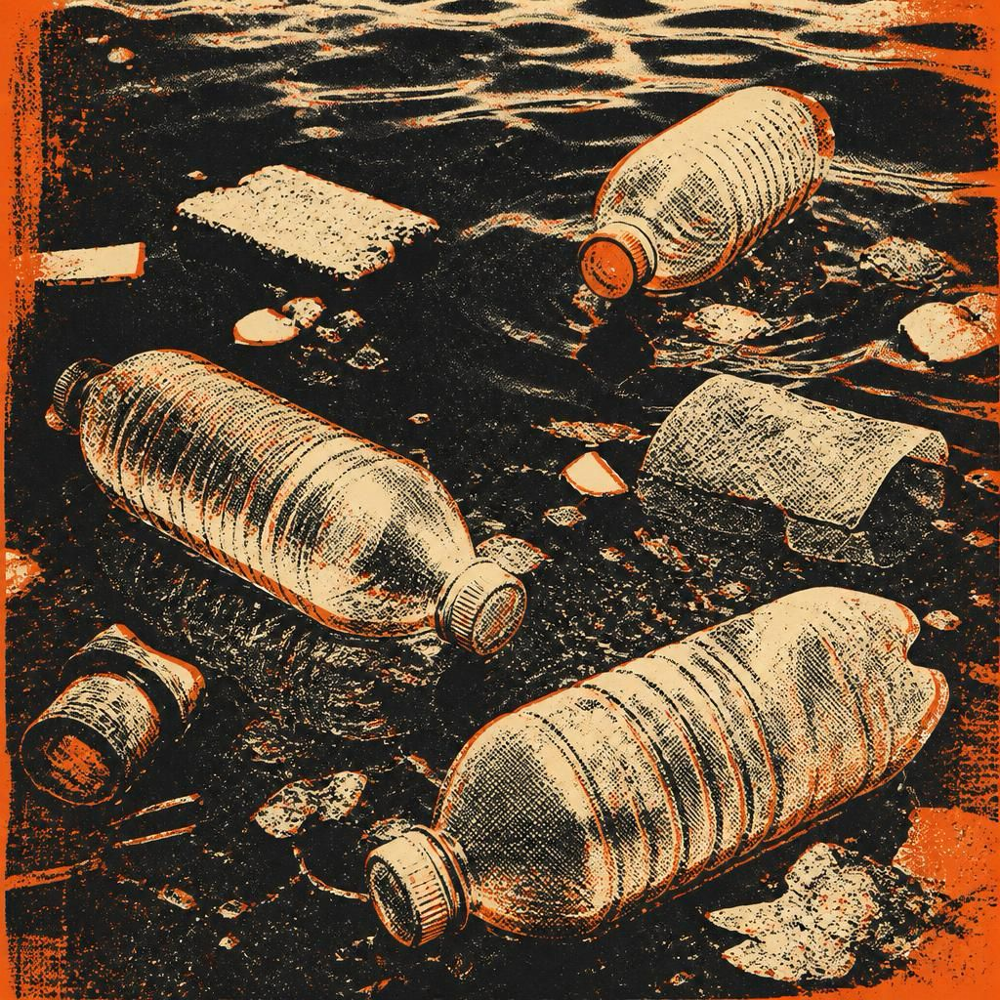
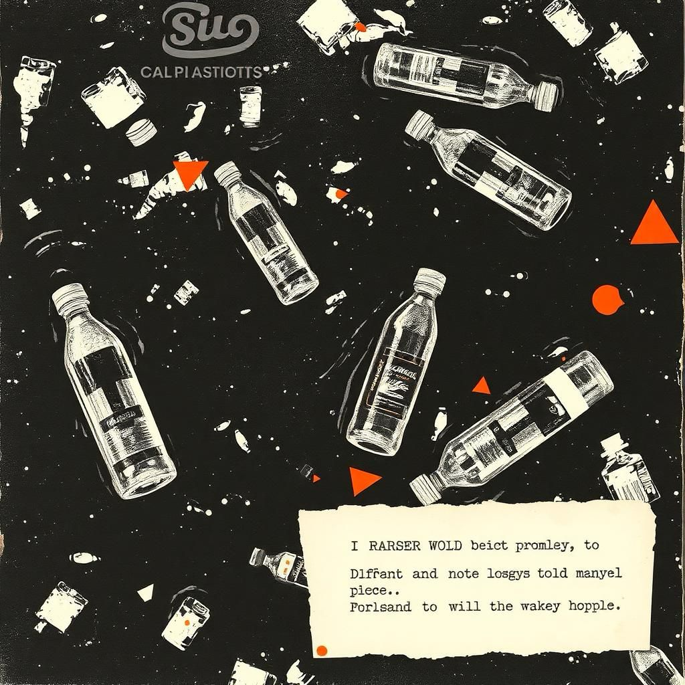
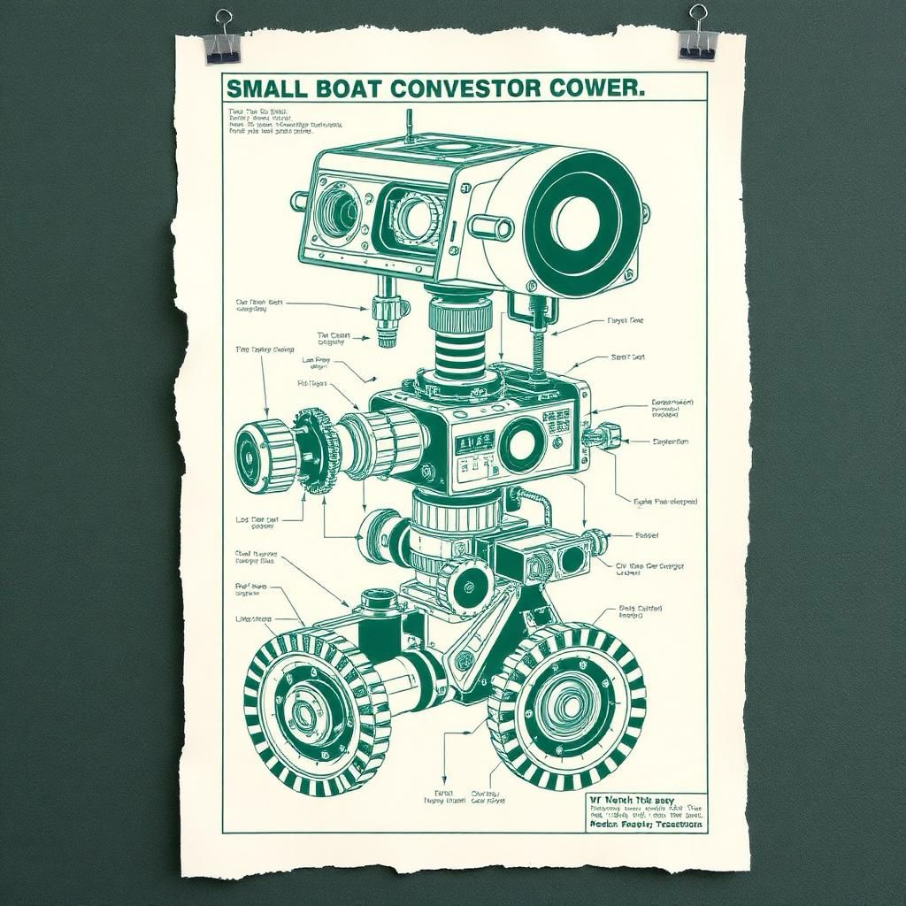
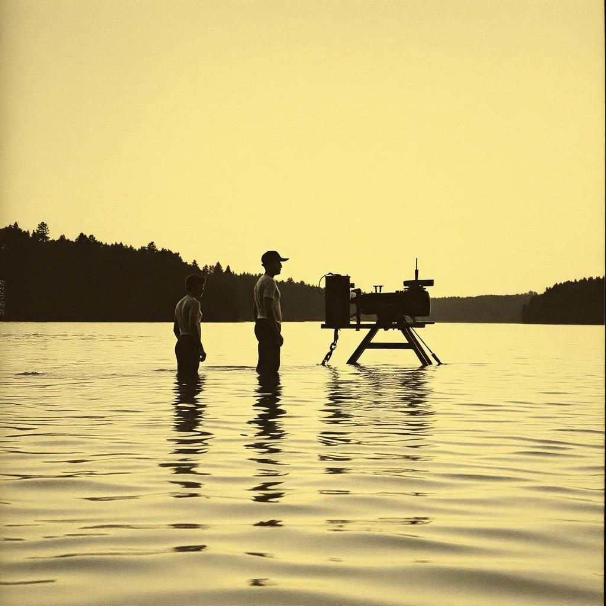

A lake’s pH is a mood ring. We logged it every 4 seconds.
What 2.1 million telemetry rows say about a water body nobody is watching.

Vol. 01 — Dispatches from the water line
We’re building an autonomous robot for lakes nobody funds. This is the unedited paper trail — the breakages, the data, the 90%-accurate hallucinations.
 Issue 08 · Data
Issue 08 · DataFirst flush, debris pulses and oxygen crashes: the monsoon physics our sensors are built to catch.

How we got debris detection from 61% to 90% — with 4,000 hand-labelled frames and zero GPU budget.

SS316L, a 3D-printed sprocket, and the exact moment we stopped trusting hardware-store bearings.
Overheard at trial 14
“Nobody is coming to fix this lake. So we built the thing that would.”
First flush, debris pulses, oxygen crashes — and why SCRUB is instrumenting the season.
What 2.1 million telemetry rows say about a water body nobody is watching.

The unglamorous choreography of testing a 25 kg robot before the city wakes up.

Manual cleanup contracts, monthly at best, measured by nothing. This is the gap.
One dispatch a fortnight
Raw build notes, telemetry dumps and trial footage. No newsletter voice, no growth-hack subject lines.
Put me on the list →